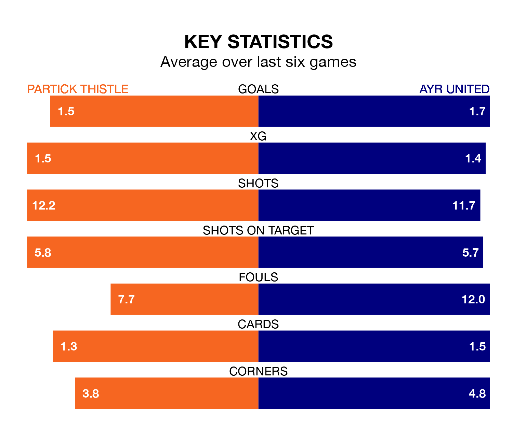

Relegation candidates Ayr United face a challenge away against high-flying Partick Thistle at Wyre Stadium at Firhill on Saturday.
Ayr United are seventh in the Championship table, and have picked up 12 wins and six draws in their 34 games to date.
Thistle, meanwhile, are third in the standings with 54 points, having won 14 and drawn 12, and are 17 points behind table-toppers Dundee United.
With 62 goals in 34 games so far this season, Partick Thistle are the league's second-highest scorers with 1.8 goals per game. But they are conceding more than average too, letting in 50 goals at a rate of 1.5 per game.
Ayr are also above average scorers, with 1.5 goals per game, compared to a league average of 1.4. They have conceded 1.7 goals per game.
In Brian Graham, Thistle have the league's sharpest shooter so far this season. He has notched 20 goals in 32 appearances.
His goal rate of one every 134 minutes is much quicker than that of Jamie Murphy, United's top scorer with a goal every 358 minutes, and a total of six goals in 30 games.
In the last 10 years, Partick Thistle and Ayr have played each other on 21 occasions. They won nine each, and they drew three times.
On average, Thistle scored 1.9 goals and the Honest Men 1.5 in those matches.
Their last meeting was on February 27, when Ayr won 4-3 at home.
The hosts are in good form in the Championship, with four wins and two draws from their last six games.
With two wins and a draw over that period, the Honest Men's form is much worse – they have taken seven points from 18, compared to Partick Thistle's 14.
Partick Thistle's last match was on April 20, a 4-0 win against Airdrieonians, with Brian Graham (two), Aidan Fitzpatrick and Ricco Diack getting the goals for Thistle.
Ayr lost 1-0 against Dundee United last time out, also on April 20.
Updated: 07:59 (UTC), 26/04/24